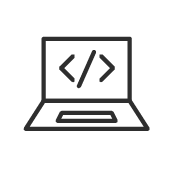

Voorwoord
Tijdens dit project ben ik een hi-fi prototype gaan coderen doormiddel van html en css. Dit wilde ik graag leren omdat ik in het verleden wel websites heb gecodeerd, en prototypes, maar ik heb nooit zelf de stap gezet van prototype naar coderen. De relevantie was voor mijzelf, omdat ik het bestaande hi-fi prototype van mijn portfolio website heb gekozen om te coderen. Deze kan ik dan blijven updaten en voor toekomstige sollicitaties/opdrachten gebruiken.